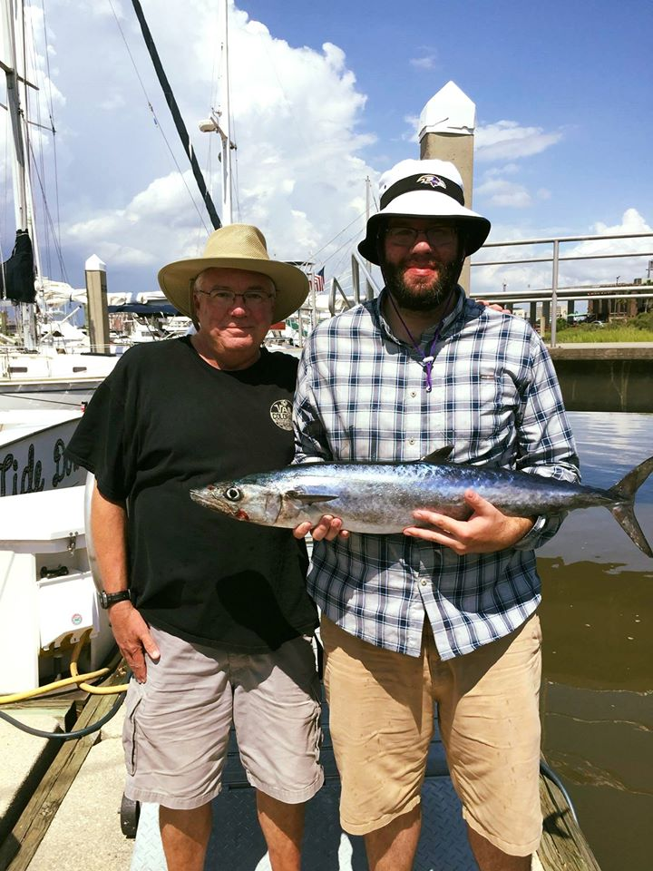

My dad and I after deep sea fishing in Charleston.
Personal background: I'm originally from Maryland, but I moved to Charlotte for work. I will forever be an Orioles and Ravens fan, and like all Marylander's, I put Old Bay on everything!
Professional background: I've worked with Nutramax Laboratories for a little over 9 years now. I've done warehouse work, lab work, and I'm currently focusing my attention on our SAP implementation project.
Academic background: I obtained my BS in Chemistry from Stevenson University in 2010. I've worked in two laboratories, but I've found that I don't enjoy that type of environment. I've been working on FreeCodeCamp, CodeAcademy, and various other classes off and on for a few years.
Primary Computer Platform: Windows 10
Courses I'm Taking, & Why:
WEB 110-01, Internet/Web Fundamentals: I find HTML to be fun.
CIS 115-01, Intro to Programming & Logic: Looking forward to learning more about Python and how it applies to programming & logic.
CTI 120-81, Network & Security Foundation: Required for coursework (Really not looking forward to this class).
DBA 110-50, Database Concepts: My company uses an Access-based software in its lab, and I'm hoping that this intro class and it's follow up classes will help improve my technical background with databases.
Something to remember me by: I am fully invested in Fantasy Football every season. I'm hoping to use Python in the future to create models and scripts to help me dominate my work league and other leagues over and over again.
Also: If I'm not working, taking classes, or dominating in Fantasy Football, I'm cooking. Proper Shrimp & Grits is one of my favorite things to make.